<!DOCTYPE html>
<html lang="en">
<head>
    <meta charset="UTF-8">
        <title>My experiment</title>
        <script src="jspsych-6.1.0/jspsych.js"></script>
        <script src="jspsych-6.1.0/plugins/jspsych-instructions.js"></script>
        <script src="jspsych-6.1.0/plugins/jspsych-html-keyboard-response.js"></script>
        <script src="jspsych-6.1.0/plugins/jspsych-json-graph-button-response.js"></script>
        <script src="jspsych-6.1.0/plugins/jspsych-json-graph-slider-response.js"></script>
        <script src="jspsych-6.1.0/plugins/jspsych-json-graph-question-response.js"></script>
        <script src="jspsych-6.1.0/plugins/jspsych-survey-likert.js"></script>
        <script src="jspsych-6.1.0/plugins/jspsych-survey-text.js"></script>
        <script src="jspsych-6.1.0/plugins/jspsych-survey-multi-choice.js"></script>
        <script src="jspsych-6.1.0/plugins/jspsych-external-html.js"></script>
        <script src="jspsych-6.1.0/plugins/jspsych-html-button-response.js"></script>
        <script src="jspsych-6.1.0/plugins/jspsych-image-slider-response.js"></script>
        <link href="jspsych-6.1.0/css/jspsych.css" rel="stylesheet" type="text/css"></link>
        <link href="jspsych-6.1.0/css/graph.css" rel="stylesheet" type="text/css"></link>

        <script src="JS/libs/g6.min.js"></script>
        <script src="JS/libs/jquery-3.1.1.min.js"></script>
        <script src="JS/libs/d3.min.js"></script>

        <script src="https://d3js.org/d3-dispatch.v1.min.js"></script>
        <script src="https://d3js.org/d3-quadtree.v1.min.js"></script>
        <script src="https://d3js.org/d3-timer.v1.min.js"></script>
        <script src="https://d3js.org/d3-force.v2.min.js"></script>

        <script src="JS/AdjacencyMat_n.js"></script>
        <script src="JS/Bipartite_n.js"></script>
        <script src="JS/network_d3-force_n.js"></script>


    </head>
    <body>

    </body>
    <script>


        const DEBUG_TEST = true;
        const BIPARTITE = 1;
        const NODELINK = 2;
        const ADJACENCY = 3;
        const stimu_h = 750;
        const stimu_w = 750;

        const TYPE = 3//Math.floor(Math.random() * 3) + 1;

        var typeString = "";
        switch(TYPE){
          case 1:
            typeString = "Bipartite";
            break;
          case 2:
            typeString = "Node Link";
            break;
          case 3:
            typeString = "Adjacency Matrix";
            break;
        }
        console.log("This Survey is of type: " + typeString);

      /* create timeline */
         var timeline = [];

         /* define welcome message trial */
         var welcome = {
           type: "html-keyboard-response",
           stimulus: "Welcome to the study. Press any key to begin."
         };
         DEBUG_TEST ? console.log("Skipping Welcome") : timeline.push(welcome);


         var check_consent = function(elem) {
           if (document.getElementById('consent_checkbox').checked) {
             return true;
           }
           else {
             alert("If you wish to participate, you must check the box next to the statement 'I agree to participate in this study.'");
             return false;
           }
           return false;
         };


         // declare the block.
         var consent = {
           type:'external-html',
           url: "bp_consent.html",
           cont_btn: "start",
           check_fn: check_consent
         };
         DEBUG_TEST ? console.log("Skipping Consent") : timeline.push(consent);


         var userID = "";
         //Mturk id collection
         var id_collection = {
          type: 'survey-text',
          questions: [
            {prompt: "What is your mTurk ID?", required: true},
          ],
          on_finish:function(data){
            userID = data.responses.split('"')[3];
            //console.log(userID);
          }

        };
        DEBUG_TEST ? console.log("Skipping ID") : timeline.push(id_collection);

        var demographics = {
          type: 'survey-multi-choice',
          questions: [
            {prompt: "<b>How old are you?</b>", options: ["18 - 25", "26 - 30", "31 - 40", "41 - 50", "50+"], name:"Age", required: false, horizontal: false},
            {prompt: "<b>What is your gender?</b>", options: ["Male", "Female", "Other"], name:"Sex", required: false, horizontal: false},
            {prompt: "<b>What is the highest level of education you have completed?</b>", options: ["High School Diploma or Equivalent", "Some College", "Associates Degree", "Bachelors", "Masters", "Ph.D. or other doctoral degree"], name:"Education", required: false, horizontal: false}
          ],
        };
        DEBUG_TEST ? console.log("Skipping Demographics") : timeline.push(demographics);


        var start_example = "<div style='width: 500px; padding: 10px; background: #F0F0F0; margin: auto; border-radius:7px;'>";
        var hover_for_answer = "<i style='width:50%; margin:auto; font-size:12px'>Hover your mouse over the black square for the answer</i>";


//style for internal div
// style='float: left;'

        var intro =   "<p>In this study, you will be shown a network using different visualization strategies</p>"+
                      "<p>The next few pages will contain a basic explaination of the visualization strategies"+
                      " and how the information is expressed.</p>" +
                      "<p>Press Continue to go to the next slide.</p>";

        var nl_instructions_1 =
        "<h2>Node Link Visualization</h2>"+
        "<p></p><p></p>"+
        "<p style='width: 700px;'>This is a node link visualization. Each node is representated as a circle. "+
        "The connections between nodes are visualized as a arrow."+
        "<div style='width: 700px;'>"+
        "<div></img>"+
        "</div>";

        var nl_instructions_2 =
        "<h2>Adjacency Matrix Visualization</h2>"+
        "<p></p><p></p>"+
        "<p style='width: 700px;'>Here we see a single highlighted node, in this case, it is the node labeled 'B'. "+
        "We can see there is a single outgoing edge from node B. "+
        "We can also see that there are three incoming edges from other nodes to node B. "+
        "</p>"+
        "<div style='width: 700px;'>"+
        "<div>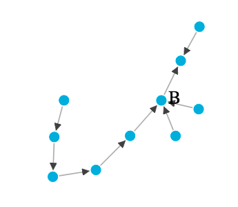</img>"+
        "</div>";

        var nl_instructions_3 =
        "<h2>Adjacency Matrix Visualization</h2>"+
        "<p></p><p></p>"+
        "<p style='width: 700px;'>Each node is only represented once. "+
        "We can see that there is a single edge from node J to node B. We can also see that there are no edges from node B to node J.<br/> "+
        ""+
        "</p>"+
        "<div style='width: 700px;'>"+
        "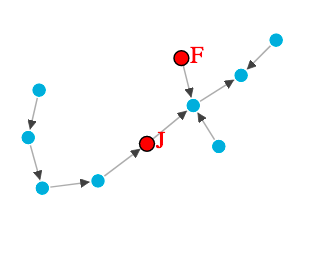</img>"+
        "</div>";

        var am_instructions_1 =
        "<h2>Adjacency Matrix Visualization</h2>"+
        "<p></p><p></p>"+
        "<p style='width: 700px;'>This is an adjacency matrix visualization. Each node is represented as a row or column. "+
        "The connections between nodes are visualized as a filled in box in the matrix. "+
        "</p><p style='width: 700px;'>The connections between nodes are directional. "+
        "The <b>row</b> a filled in box corresponds with the source of the connection, "+
        "and the <b>column</b> of a filled in box corresponds with the target of the connection"+
        "<div style='width: 700px;'>"+
        "<div></img>"+
        "</div>";


        var am_instructions_2 =
        "<h2>Adjacency Matrix Visualization</h2>"+
        "<p></p><p></p>"+
        "<p style='width: 700px;'>Here we see a single highlighted node, in this case, it is the node labeled 'B'. "+
        "The filled in boxes in the <b>row</b> correspond with outgoing edges. So we see that there is a single outgoing edge from node B to the \"first\" node "+
        "</p><p style='width: 700px;'>The filled in boxes in the <b>column</b> correspond with incoming edges. "+
        "So we can see that node B has 3 incomming edges. "+
        "and the column of a filled in box corresponds with the target of the connection"+
        "<div style='width: 700px;'>"+
        "<div>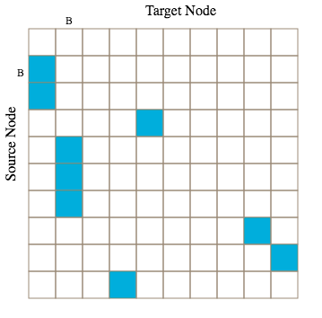</img>"+
        "</div>";

        var am_instructions_3 =
        "<h2>Adjacency Matrix Visualization</h2>"+
        "<p></p><p></p>"+
        "<p style='width: 700px;'>Each filled in box represents a single edge. "+
        "We can see that there is a single edge from node J to node B. We can also see that there are no edges from node B to node J.<br/> "+
        ""+
        "</p>"+
        "<div style='width: 700px;'>"+
        "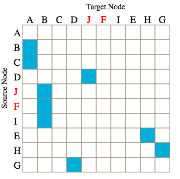</img>"+
        "</div>";

        var am_instructions_4 =
        "<h2>Adjacency Matrix Visualization</h2>"+
        "<p></p><p></p>"+
        "<p style='width: 700px;'>These two networks present the same information. "+
        "Please take a moment to convince yourself that these networks are the same. The same two nodes B and J are highlighted on both networks.<br/> "+
        ""+
        "</p>"+
        "<div style='width: 800px;'>"+
        "<div style='float: left;'></img>" +
        "<p class='small'><strong></strong></p></div>" +
        "<div class='float: right;'></img>" +
        "<p class='small'><strong></strong></p></div></div>";

        var bp_instructions_1 =
        "<h2>Bipartite Visualization</h2>"+
        "<p></p><p></p>"+
        "<p style='width: 700px;'>This is an bipartite visualization. Each node is represented twice on a vertical list of nodes. "+
        "The connections between nodes are visualized as connections going between the two vertical list "+
        "</p><p style='width: 700px;'>As in the previous examples, the connections between nodes are directional. "+
        "the first column corresponds with the source of the connection, "+
        "and the second column corresponds with the target of the connection"+
        "<div style='width: 700px;'>"+
        "<div></img>"+
        "</div>";

        var bp_instructions_2 =
        "<h2>Bipartite Visualization</h2>"+
        "<p></p><p></p>"+
        "<p style='width: 700px;'>Here we see a single highlighted node, in this case, it is the node labeled 'B'. "+
        "The nodes the <b>left</b> correspond with outgoing edges. So we see that there is a single outgoing edge from node B to the \"first\" node "+
        "</p><p style='width: 700px;'>The nodes on the <b>right</b> correspond with incoming edges. "+
        "So we can see that node B has 3 incomming edges. "+
        ""+
        "<div style='width: 700px;'>"+
        "<div>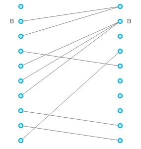</img>"+
        "</div>";

        var bp_instructions_3 =
        "<h2>Bipartite Visualization</h2>"+
        "<p></p><p></p>"+
        "<p style='width: 700px;'>Each node is represented twice, once as an \"outgoing\" node, on the left side, and once as an \"incoming\" node on the right side. "+
        "We can see that there is a single edge from node J to node B. We can also see that there are no edges from node B to node J.<br/> "+
        ""+
        "</p>"+
        "<div style='width: 700px;'>"+
        "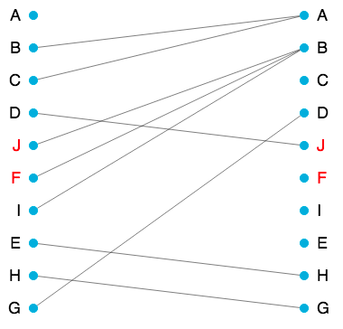</img>"+
        "</div>";

        var bp_instructions_4 =
        "<h2>Bipartite Visualization</h2>"+
        "<p></p><p></p>"+
        "<p style='width: 700px;'>These two networks present the same information. "+
        "Please take a moment to convince yourself that these networks are the same. The same two nodes B and J are highlighted on both networks.<br/> "+
        ""+
        "</p>"+
        "<div style='width: 800px;'>"+
        "<div style='float: left;'></img>" +
        "<p class='small'><strong></strong></p></div>" +
        "<div class='float: right;'></img>" +
        "<p class='small'><strong></strong></p></div></div>";

        var instructions_end = "<h2>End of Instructions</h2>" +
        "<p></p><p></p>"+
        "<p style='width: 700px;'>This is the end of the instructions. "+
        "You will not be able to return to the instructions after pressing \"Next\". "+
        "Please ensure you have a basic understanding of the visualization presented to you. </p>";


        ins_pages = [intro];


        switch(TYPE){
          case BIPARTITE:
            ins_pages.push(bp_instructions_1);
            ins_pages.push(bp_instructions_2);
            ins_pages.push(bp_instructions_3);
            ins_pages.push(bp_instructions_4);
            break;
          case NODELINK:
            ins_pages.push(nl_instructions_1);
            ins_pages.push(nl_instructions_2);
            ins_pages.push(nl_instructions_1);
            break;
          case ADJACENCY:
            ins_pages.push(am_instructions_1);
            ins_pages.push(am_instructions_2);
            ins_pages.push(am_instructions_3);
            ins_pages.push(am_instructions_4);
            break;
          }

        ins_pages.push(instructions_end);

        console.log(ins_pages);

         var instructions = {
              type: 'instructions',
              pages: ins_pages,
              show_clickable_nav: true
          }
          DEBUG_TEST ? console.log("Skipping Instructions") : timeline.push(instructions)


        var file_list = ['JSON/pilot_20_1_2_ordered.json',
                         'JSON/pilot_20_2_2_ordered.json',
                         'JSON/pilot_20_4_2_ordered.json',
                         'JSON/pilot_50_1_3_ordered.json',
                         'JSON/pilot_50_2_3_ordered.json',
                         'JSON/pilot_50_4_3_ordered.json']


       var scale1 = [
          "Very Difficult",
          "Somewhat Difficult",
          "Neutral",
          "Somewhat Easy",
          "Very Easy"
          ];
      var scale3 = [
         "Not at all confident",
         "Somewhat unconfident",
         "Neutral",
         "Somewhat confident",
         "Very confident"
         ];

       var likert_page = {
         type: 'survey-likert',
         questions: [
           {prompt: "How difficult was the previous question?", labels: scale1, required: true},
          // {prompt: "Were you able to find an answer to the question? If not, why?", labels: scale2, required: true},
           {prompt: "How confident are you in your answer to the previous question?", labels: scale3, required: true},

         ],
         on_finish:function(data){
           data.user = userID
         }
        };

        var fixation = {
          type: 'html-keyboard-response',
          stimulus: '<div style="font-size:60px;"></div>',
          choices: jsPsych.NO_KEYS,
          trial_duration: 500,
        }

        var test_procedures = [];


        // ---------------------------------------
        //    SP
        //
        //    Shortest Path
        // ---------------------------------------
        var SP_highlight = [
          ['C-Q'],
          ['B-K'],
          ['G-A'],
          ['AF-Q'],
          ['Z-R'],
          ['H-V'],
        ]

        var SP_stimuli = [
          {stimulus: {file:file_list[0], type:TYPE, highlight:SP_highlight[0]},
           prompt: "<div style='width: 800px'><p>How many edges are in the shortest path from node " + SP_highlight[0][0].split("-")[0] + " to node " + SP_highlight[0][0].split("-")[1] + "?</p></div>"},
          {stimulus: {file:file_list[1], type:TYPE, highlight:SP_highlight[1]},
           prompt: "<div style='width: 800px'><p>How many edges are in the shortest path from node " + SP_highlight[1][0].split("-")[0] + " to node " + SP_highlight[1][0].split("-")[1] + "?</p></div>"},
          {stimulus: {file:file_list[2], type:TYPE, highlight:SP_highlight[2]},
           prompt: "<div style='width: 800px'><p>How many edges are in the shortest path from node " + SP_highlight[2][0].split("-")[0] + " to node " + SP_highlight[2][0].split("-")[1] + "?</p></div>"},
          {stimulus: {file:file_list[3], type:TYPE, highlight:SP_highlight[3]},
           prompt: "<div style='width: 800px'><p>How many edges are in the shortest path from node " + SP_highlight[3][0].split("-")[0] + " to node " + SP_highlight[3][0].split("-")[1] + "?</p></div>"},
          {stimulus: {file:file_list[4], type:TYPE, highlight:SP_highlight[4]},
           prompt: "<div style='width: 800px'><p>How many edges are in the shortest path from node " + SP_highlight[4][0].split("-")[0] + " to node " + SP_highlight[4][0].split("-")[1] + "?</p></div>"},
          {stimulus: {file:file_list[5], type:TYPE, highlight:SP_highlight[5]},
           prompt: "<div style='width: 800px'><p>How many edges are in the shortest path from node " + SP_highlight[5][0].split("-")[0] + " to node " + SP_highlight[5][0].split("-")[1] + "?</p></div>"}
           ]

        var SP_test = {
          type: "json-graph-question-response",
          stimulus: jsPsych.timelineVariable('stimulus'),
          prompt: jsPsych.timelineVariable('prompt'),
          stimulus_width: stimu_w,
          stimulus_height: stimu_h,
          on_finish:function(data){
            data.user = userID;
            data.task = "SP";
            data.type = TYPE;
            data.nodes = parseInt(this.stimulus["file"].split("_")[1]);
            data.density = parseInt(this.stimulus["file"].split("_")[2]);
            data.hl = this.stimulus["highlight"].toString();
          }
        }

        var sp_soln = "<div class='answer'>3</div>";
        var SP_example = start_example;
        switch(TYPE){
          case BIPARTITE:
            SP_example += "<p> </p>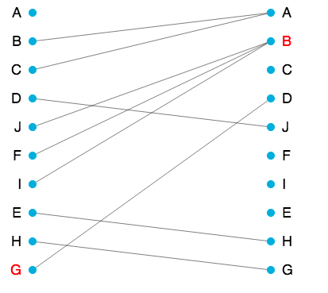</img>"+
            "<p>How many edges are in the shortest path from node G to node B?</p>"+
            sp_soln+
            hover_for_answer+
            "</div>"+
            "<p> </p><p style='width: 600px; margin: auto;'><i></i><p>";
            break;
          case NODELINK:
            SP_example += "<p> </p>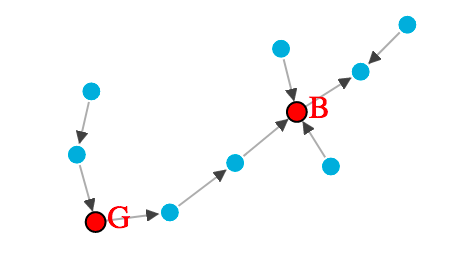</img>"+
            "<p>How many edges are in the shortest path from node G to node B?</p>"+
            sp_soln+
            hover_for_answer+
            "</div>"+
            "<p> </p><p style='width: 600px; margin: auto;'><i></i><p>";
            break;
          case ADJACENCY:
            SP_example += "<p> </p>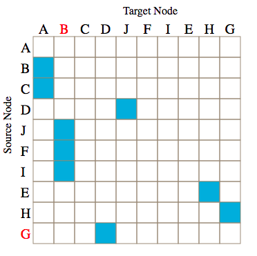</img>"+
            "<p>How many edges are in the shortest path from node G to node B?</p>"+
            sp_soln+
            hover_for_answer+
            "</div>"+
            "<p> </p><p style='width: 600px; margin: auto;'><i></i><p>";
            break;
          }

        var SP_intro = {
          type: "html-keyboard-response",
          stimulus: "<div style='width: 1000px;'>"+
          "<b> Instructions for Shortest Path Task </b><br></br>"+
          "<p style='text-align: left'>"+
          "The following task is to find the shortest path between two specified nodes. "+
          "This direction will be specified. "+
          "Your instructions are to find the shortest path between the nodes, and then count the number of edges in that path. "+
          "There may not always be a possible shortest path, in this case please enter 0. "+
          "An example problem is provided below: </p>"+
          SP_example+
          "<p>"+
          "This task will start after you press any key."+
          "</p></div>"
        };


        var SP_test_procedure = {
          timeline: [fixation, SP_test, likert_page],
          randomize_order: true,
          timeline_variables: SP_stimuli
        }

        var SP_grand_procedure = {
          timeline: [SP_intro, SP_test_procedure]
        }


        // ---------------------------------------
        //    IL
        //
        //    Incoming Links
        // ---------------------------------------
        var IL_highlight = [
          ['F-F'],
          ['F-F'],
          ['F-F'],
          ['F-F'],
          ['F-F'],
          ['F-F'],
        ]


        var IL_stimuli = [
          {stimulus: {file:file_list[0], type:TYPE, highlight:IL_highlight[0]},
           prompt: "<div style='width: 800px'><p>How many incoming edges does node " + IL_highlight[0][0].split("-")[0] + " have?</p></div>"},
          {stimulus: {file:file_list[1], type:TYPE, highlight:IL_highlight[1]},
           prompt: "<div style='width: 800px'><p>How many incoming edges does node "+IL_highlight[1][0].split("-")[0]+" have?</p></div>"},
          {stimulus: {file:file_list[2], type:TYPE, highlight:IL_highlight[2]},
           prompt: "<div style='width: 800px'><p>How many incoming edges does node "+IL_highlight[2][0].split("-")[0]+" have?</p></div>"},
          {stimulus: {file:file_list[3], type:TYPE, highlight:IL_highlight[3]},
           prompt: "<div style='width: 800px'><p>How many incoming edges does node "+IL_highlight[3][0].split("-")[0]+" have?</p></div>"},
          {stimulus: {file:file_list[4], type:TYPE, highlight:IL_highlight[4]},
           prompt: "<div style='width: 800px'><p>How many incoming edges does node "+IL_highlight[4][0].split("-")[0]+" have?</p></div>"},
          {stimulus: {file:file_list[5], type:TYPE, highlight:IL_highlight[5]},
           prompt: "<div style='width: 800px'><p>How many incoming edges does node "+IL_highlight[5][0].split("-")[0]+" have?</p></div>"}
           ]


       var il_soln = "<div class='answer'>3</div>";
       var IL_example = start_example;
       switch(TYPE){
         case BIPARTITE:
           IL_example += "<p> </p></img>"+
           "<p>How many incoming edges does node B have?</p>"+
           il_soln+
           hover_for_answer+
           "</div>"+
           "<p> </p><p style='width: 600px; margin: auto;'><i>Remember that the right column of a bipartite visualization representes the incoming edges of a node</i><p>";
           break;
         case NODELINK:
           IL_example += "<p> </p></img>"+
           "<p>How many incoming edges does node B have?</p>"+
           il_soln+
           hover_for_answer+
           "</div>"+
           "<p> </p><p style='width: 600px; margin: auto;'>We will only be asking about incoming edges<p>";
           break;
         case ADJACENCY:
           IL_example += "<p> </p></img>"+
           "<p>How many incoming edges does node B have?</p>"+
           il_soln+
           hover_for_answer+
           "</div>"+
           "<p> </p><p style='width: 600px; margin: auto;'><i>Remember that the filled in squares of a column of a matrix visualization representes the incoming edges of a node</i><p>";
           break;
         }

       var IL_intro = {
         type: "html-keyboard-response",
         stimulus: "<div style='width: 1000px;'>"+
         "<b> Instructions for Incoming Edges Task </b><br></br>"+
         "<p style='text-align: left'>"+
         "The following task is to find the number of incoming edges into a specified nodes. "+
         "The node will be specified, and you must find the number of edges coming from other nodes to the specified nodes. " +
         "An example problem is provided below: <p>"+
         IL_example+
         "<p>"+
         "This task will start after you press any key."+
         "</p></div>"
       };

        var IL_test = {
          type: "json-graph-question-response",
          stimulus: jsPsych.timelineVariable('stimulus'),
          prompt: jsPsych.timelineVariable('prompt'),
          stimulus_width: stimu_w,
          stimulus_height: stimu_h,
          on_finish:function(data){
            data.user = userID;
            data.task = "IL";
            data.type = TYPE;
            data.nodes = parseInt(this.stimulus["file"].split("_")[1]);
            data.density = parseInt(this.stimulus["file"].split("_")[2]);
            data.hl = this.stimulus["highlight"].toString();
          }
        }


        var IL_test_procedure = {
          timeline: [fixation, IL_test, likert_page],
          randomize_order: true,
          timeline_variables: IL_stimuli
        }

        var IL_grand_procedure = {
          timeline: [IL_intro, IL_test_procedure]
        }


        // ---------------------------------------
        //    CN
        //
        //    Common Neighbors
        // ---------------------------------------
        var CN_highlight = [
          ['F-F', 'B-B'],
          ['A-A', 'N-N'],
          ['G-G', 'B-B'],
          ['F-F', 'E-E'],
          ['F-F', 'Q-Q'],
          ['R-R', 'Z-Z'],
        ]

        var CN_stimuli = [
          {stimulus: {file:file_list[0], type:TYPE, highlight:CN_highlight[0]},
          prompt: "<div style='width: 800px'><p>How many common neighbors are between "+CN_highlight[0][0].split("-")[0]+" and "+CN_highlight[0][1].split("-")[0]+"?</p></div>"},
          {stimulus: {file:file_list[1], type:TYPE, highlight:CN_highlight[1]},
          prompt: "<div style='width: 800px'><p>How many common neighbors are between "+CN_highlight[1][0].split("-")[0]+" and "+CN_highlight[1][1].split("-")[0]+"?</p></div>"},
          {stimulus: {file:file_list[2], type:TYPE, highlight:CN_highlight[2]},
          prompt: "<div style='width: 800px'><p>How many common neighbors are between "+CN_highlight[2][0].split("-")[0]+" and "+CN_highlight[2][1].split("-")[0]+"?</p></div>"},
          {stimulus: {file:file_list[3], type:TYPE, highlight:CN_highlight[3]},
          prompt: "<div style='width: 800px'><p>How many common neighbors are between "+CN_highlight[3][0].split("-")[0]+" and "+CN_highlight[3][1].split("-")[0]+"?</p></div>"},
          {stimulus: {file:file_list[4], type:TYPE, highlight:CN_highlight[4]},
          prompt: "<div style='width: 800px'><p>How many common neighbors are between "+CN_highlight[4][0].split("-")[0]+" and "+CN_highlight[4][1].split("-")[0]+"?</p></div>"},
          {stimulus: {file:file_list[5], type:TYPE, highlight:CN_highlight[5]},
          prompt: "<div style='width: 800px'><p>How many common neighbors are between "+CN_highlight[5][0].split("-")[0]+" and "+CN_highlight[5][1].split("-")[0]+"?</p></div>"},
           ]

       var cn_soln = "<div class='answer'>0</div>";
       var CN_example = start_example;
       switch(TYPE){
         case BIPARTITE:
           CN_example += "<p> </p>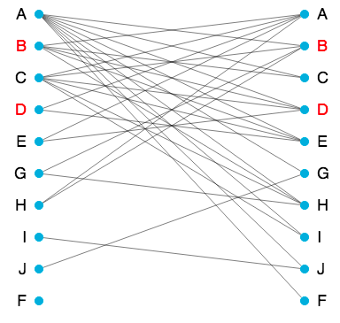</img>"+
           "<p>How many common neighbors are between B and F?</p>"+
           cn_soln+
           hover_for_answer+
           "</div>"+
           "<p> </p><p style='width: 600px; margin: auto;'><i>Remember that the right column of a bipartite visualization representes the incoming edges of a node, and the left column represents the outgoing edges of a node.</i><p>";
           break;
         case NODELINK:
           CN_example += "<p> </p>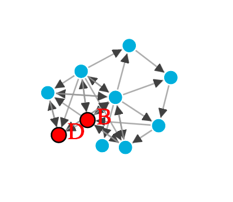</img>"+
           "<p>How many common neighbors are between B and F?</p>"+
           cn_soln+
           hover_for_answer+
           "</div>"+
           "<p> </p><p style='width: 600px; margin: auto;'><p>";
           break;
         case ADJACENCY:
           CN_example += "<p> </p>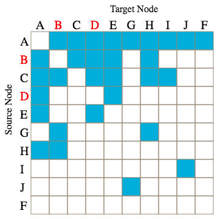</img>"+
           "<p>How many common neighbors are between B and F?</p>"+
           cn_soln+
           hover_for_answer+
           "</div>"+
           "<p> </p><p style='width: 600px; margin: auto;'><i>Remember that the filled in squares of a column of a matrix visualization representes the incoming edges of a node, and the filled in squares of a row of a matrix visualization represents the outgoing edges of a node.</i><p>";
           break;
         }

       var CN_intro = {
         type: "html-keyboard-response",
         stimulus: "<div style='width: 1000px;'>"+
         "<b> Instructions for Common Neighbors Task </b><br></br>"+
         "<p style='text-align: left'>"+
         "The following task is to find the number of common neighbors between two specified nodes. "+
         'A node is a "Common Neighbor" if there are edges from another node to both specified nodes OR there are edges from both specified nodes to another node. ' +
         "An example problem is provided below: <p>"+
         CN_example+
         "<p>"+
         "This task will start after you press any key."+
         "</p></div>"
       };

        var CN_test = {
          type: "json-graph-question-response",
          stimulus: jsPsych.timelineVariable('stimulus'),
          prompt: jsPsych.timelineVariable('prompt'),
          stimulus_width: stimu_w,
          stimulus_height: stimu_h,
          on_finish:function(data){
            data.user = userID;
            data.task = "CN";
            data.type = TYPE;
            data.nodes = parseInt(this.stimulus["file"].split("_")[1]);
            data.density = parseInt(this.stimulus["file"].split("_")[2]);
            data.hl = this.stimulus["highlight"].toString();
          }
        }


        var CN_test_procedure = {
          timeline: [fixation, CN_test, likert_page],
          randomize_order: true,
          timeline_variables: CN_stimuli
        }

        var CN_grand_procedure = {
          timeline: [CN_intro, CN_test_procedure]
        }


        // ---------------------------------------
        //    SG
        //
        //    Same Group
        // ---------------------------------------

        var SG_highlight = [
          ['F-F', 'B-B'],
          ['A-A', 'N-N'],
          ['G-G', 'B-B'],
          ['F-F', 'E-E'],
          ['F-F', 'Q-Q'],
          ['R-R', 'Z-Z'],
        ]

        var SG_stimuli = [
          {stimulus: {file:file_list[0], type:TYPE, highlight:SG_highlight[0]},
          prompt: "<div style='width: 800px'><p>Are node "+SG_highlight[0][0].split("-")[0]+" and node "+SG_highlight[0][1].split("-")[0]+" in the same group?</p></div>"},
          {stimulus: {file:file_list[1], type:TYPE, highlight:SG_highlight[1]},
          prompt: "<div style='width: 800px'><p>Are node "+SG_highlight[1][0].split("-")[0]+" and node "+SG_highlight[1][1].split("-")[0]+" in the same group?</p></div>"},
          {stimulus: {file:file_list[2], type:TYPE, highlight:SG_highlight[2]},
          prompt: "<div style='width: 800px'><p>Are node "+SG_highlight[2][0].split("-")[0]+" and node "+SG_highlight[2][1].split("-")[0]+" in the same group?</p></div>"},
          {stimulus: {file:file_list[3], type:TYPE, highlight:SG_highlight[3]},
          prompt: "<div style='width: 800px'><p>Are node "+SG_highlight[3][0].split("-")[0]+" and node "+SG_highlight[3][1].split("-")[0]+" in the same group?</p></div>"},
          {stimulus: {file:file_list[4], type:TYPE, highlight:SG_highlight[4]},
          prompt: "<div style='width: 800px'><p>Are node "+SG_highlight[4][0].split("-")[0]+" and node "+SG_highlight[4][1].split("-")[0]+" in the same group?</p></div>"},
          {stimulus: {file:file_list[5], type:TYPE, highlight:SG_highlight[5]},
          prompt: "<div style='width: 800px'><p>Are node "+SG_highlight[5][0].split("-")[0]+" and node "+SG_highlight[5][1].split("-")[0]+" in the same group?</p></div>"},
           ]


           var sg_soln = "<div class='answer'>Yes</div>";
           var SG_example = start_example;
           switch(TYPE){
             case BIPARTITE:
               SG_example += "<p> </p></img>"+
               "<p>Are node B and node F in the same group?</p>"+
               sg_soln+
               hover_for_answer+
               "</div>"+
               "<p> </p><p style='width: 600px; margin: auto;'><i> </i><p>";
               break;
             case NODELINK:
               SG_example += "<p> </p></img>"+
               "<p>Are node B and node F in the same group?</p>"+
               sg_soln+
               hover_for_answer+
               "</div>"+
               "<p> </p><p style='width: 600px; margin: auto;'><p>";
               break;
             case ADJACENCY:
               SG_example += "<p> </p></img>"+
               "<p>Are node B and node F in the same group?</p>"+
               sg_soln+
               hover_for_answer+
               "</div>"+
               "<p> </p><p style='width: 600px; margin: auto;'><i> </i><p>";
               break;
             }

           var SG_intro = {
             type: "html-keyboard-response",
             stimulus: "<div style='width: 1000px;'>"+
             "<b> Instructions for Same Group Task </b><br></br>"+
             "<p style='text-align: left'>"+
             "The following task is to decide if the two specified nodes are in the same group"+
             "A 'group' is a smaller collection of nodes that have a lot of connections between them. You have to decide if the two specified nodes are in the same group. Use your best judgement. " +
             "An example problem is provided below: <p>"+
             SG_example+
             "<p>"+
             "This task will start after you press any key."+
             "</p></div>"
           };


        var SG_test = {
          type: "json-graph-button-response",
          stimulus: jsPsych.timelineVariable('stimulus'),
          prompt: jsPsych.timelineVariable('prompt'),
          choices: ['Yes', 'No'],
          stimulus_width: stimu_w,
          stimulus_height: stimu_h,
          on_finish:function(data){
            data.user = userID;
            data.task = "SG";
            data.type = TYPE;
            data.nodes = parseInt(this.stimulus["file"].split("_")[1]);
            data.density = parseInt(this.stimulus["file"].split("_")[2]);
            data.hl = this.stimulus["highlight"].toString();
          }
        }


        var SG_test_procedure = {
          timeline: [fixation, SG_test, likert_page],
          randomize_order: true,
          timeline_variables: SG_stimuli
        }

        var SG_grand_procedure = {
          timeline: [SG_intro, SG_test_procedure]
        }


        // -------------------------
        //    Final Test Assembly


        test_procedures.push(SP_grand_procedure);
        test_procedures.push(IL_grand_procedure);
        test_procedures.push(CN_grand_procedure);
        test_procedures.push(SG_grand_procedure);


        //Adding the tests to the timeline in random order
        test_procedures = jsPsych.randomization.repeat(test_procedures, 1);
        timeline.push(test_procedures[0]);
        timeline.push(test_procedures[1]);
        timeline.push(test_procedures[2]);
        timeline.push(test_procedures[3]);


        jsPsych.init({
          timeline: timeline,
          on_finish: function() {
             jsPsych.data.displayData();
           }
        });


        // jsPsych.init({
        //   timeline: timeline,
    	  // on_finish: function() {
        //         //jsPsych.data.displayData();
        //
    		// 	on_finish: {
    		// 	  var xhr = new XMLHttpRequest();
    		// 	  xhr.open('POST', 'write_data.php'); // change 'write_data.php' to point to php script.
    		// 	  xhr.setRequestHeader('Content-Type', 'application/json');
    		// 	  xhr.onload = function() {
    		// 		if(xhr.status == 200){
    		// 			console.log(xhr.responseText);
    		// 		  var response = JSON.parse(JSON.stringify(xhr.responseText));
    		// 		  console.log(response.success);
    		// 		}
    		// 	  };
        //     console.log(jsPsych.data.get().json());
    		// 	  xhr.send(jsPsych.data.get().json());
        //
    		// 	}
        //     }
        // });


    </script>
</html>
